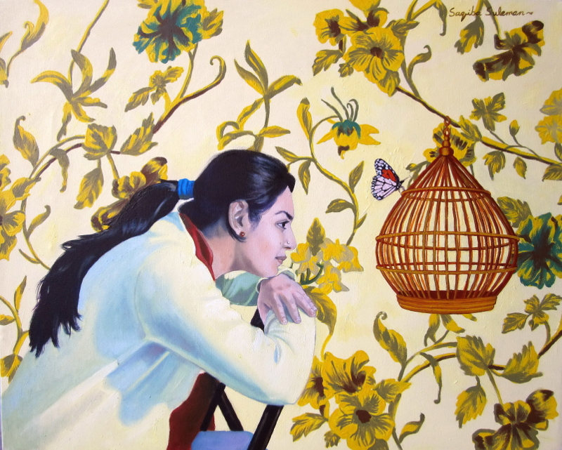

February 13, 2012
Saqiba’s brush paints poetry
© Saqiba Suleman
A true artist has the skill of turning the ordinary into the extraordinary, Saqiba Suleman told me in an interview. Saqiba’s “extra sensitivity towards the various facets of life” makes her an artist. What really attracts her about her profession is the knowledge that she’s different, as well as her ability to portray what she feels. “Being an artist, I feel a sense of responsibility towards the society,” she said.
Saqiba received a master’s degree with a gold medal from the University of the Punjab. During her college life, her drawings and sketches received a great deal of appreciation, and that’s when she realised that she had an inborn talent for painting.
She loves oil painting, and receives inspiration from vivid colours and decorative patterns. To her, the most enjoyable thing about producing art is the liberty of thought, as well as catharsis, which drives her to continue doing what she does.
The best comment she received on her work was by the prominent artist Shahnawaz Zaidi on the occasion of her first solo art exhibition. Zaidi said her paintings were like poems. She said it’s important for her that people understand and like her work, because she feels motivated to produce more art.
Her art fulfils her, and gives her satisfaction and a sense of completion. She feels grateful that her friends and family support her in every possible way. “Their support is invaluable to me,” she said. Talking about criticism, she remarked that she takes it positively, letting it guide her and her work.
Saqiba frequently depicts symbols of femininity in her work. The recurring message that she expresses through her art is that of hope. “Even in these despondent times, I try to spread the hope of a good future,” she said. Politics, current affairs or religion don’t play any role in her art, but passion is the driving force of all her works.
She admires the artists Saeed Akhtar, Iqbal Hussain, Vincent van Gogh and Collin David the most. Her favourite artwork is Van Gogh’s ‘Starry Night’. If she could receive training from a deceased artist, she would choose Michelangelo. To her, “only the ceiling of the Sistine Chapel is a complete artwork.”
She said the reason art is taboo in the Pakistani society is because artists have always had the knack of exposing the real face of the society, which “the conservatives would rather not confront.” According to her, the purpose of art in the present era is to give people peace of mind and hope for a desired future.
She finds that nowadays, art as a profession in Pakistan is more popular and more people are able to grasp it. She agreed that not everyone can understand or appreciate art, but those that do, differ in their interpretation of the artworks, and some contemporary artists take advantage of that and produce mediocre work. “Not everyone’s work is of considerable value. They try to find shortcuts to glory,” she said.
She believes that some artists produce controversial art only because controversy sells and is “an easy way to gain popularity.” She said whether or not today’s art enthusiasts are fake depends on the way one sees them.
Saqiba wants the government to fund art schools, but believes that art can’t be taught and can only be polished. She said it’s not easy being an artist in today’s world because the current economic crisis doesn’t allow every aspirant to afford doing so.
First published in Pakistan Today